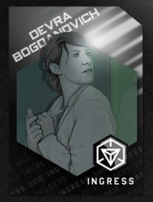
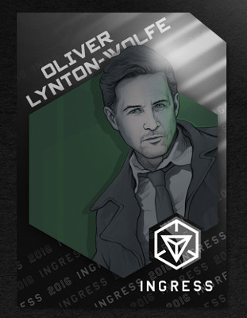
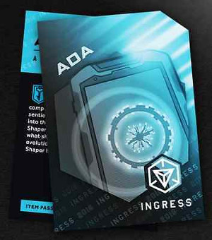
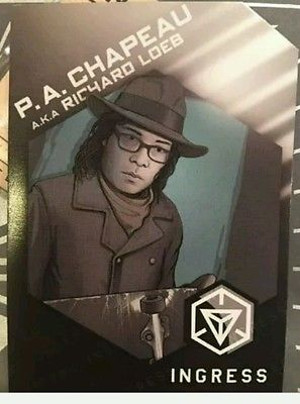

Первоначально Niantic был жёсткой Alternative Reality Game с минимумом интерактива. На сайте висели лишь отрывочные документы, важные куски информации предлагалось искать по всей сети, а потом ещё и расшифровывать. По мере роста аудитории игра оказуаливалась. Сначала открыли онлайн-курсы криптографии, потом на сам сайт стали вывешивать почти всё важное, и наконец опубликовали книжку, в которой внятно излагалось, из-за чего весь сыр-бор. Сейчас за сюжетом можно следить, читая один ниантикпроджект: теперь на нём дублируются даже важные посты из мастерских гуглоплюсов. Суть истории такова. Эксперименты на Большом Гудронном Кавайдере привели к открытию не только бозона Хиггса, но и так называемой «Экзотической Материи» (XM). Сначала она никого не заинтересовала: она ничего не делала, только испускала хаотичные электромагнитные волны. Но в несуществующей американской спеслужбе NIA нашлась светлая голова, которая решила исследовать эти волны, для чего в Женеве на базе CERN была открыта специальная лаборатория под названием Ниантик. Проект был назван в честь кораблекрушения — и, как показали дальнейшие собтия, не зря. Достаточно взглянуть на основных действующих лиц.




Плюс толпа талантливых людей, чувствительных к XM — учёные, художники, экстрасенсы — привлечённых в качестве подопытных и консультантов.Вы же понимаете, что это не могло кончиться хорошо? Ну так оно и не кончилось. Исследования экзотической материи показали, что она влияет на людей... Странно. С одной стороны, она вызывает фонтаны креатива. С другой стороны, психозы. С третьей, ей можно облучать людей, чтобы контролировать их мысли. С четвёртой, через неё что-то транслируют непонятные существа, которых назвали шейперами. Кто они такие и чего хотят — главная тайна сюжета. Одни думают, это это мозговые слизни, которые хотят вторгнуться, завладеть и поработить. Другие считают, что это прогрессоры, которые научили нас разводить огонь, писать на стенах и строить города, а теперь пытаются помочь нам шагнуть на новую ступень эволюции. Доктор Кальвин как ястреб и патриот видел в этом только возможность дать дяде Сэму психотронное оружие. К счастью, всем кроме него на интересы дяди Сэма было покласть болт размером с адронный коллайдер.
В ночь, которая вошла в историю как «ночь эпифании», доктор Вульф провёл смелый эксперимент, в результате которого всех в здании накрыло сверхдозой XM. Каждый слышал что-то своё, но вставило всех, кроме доктора Богданович и скульптора Роланда Джарвиса. Пока всех штырило, эта парочка при поддержке Ады рванула из Ниантика. Девра скрылась и слила в сеть наработки Линтона-Вульфа, которые по счастливому стечению обстоятельств позволяли превратить любой смартфон (только андроидный и с GPS) в сканер экзотической материи. Джарвиса по наводке Ады застрелили люди Филлипса, но он вскоре вернулся в виде голоса, вещающего из порталов о Просветлении. Тысячи человек по всему миру стали агентами одной из двух сил: Сопротивления во главе с Адой или Просветлённых, направляемых Джарвисом. Первые считали, что XM зло, шейперы вторженцы, а порталы надо заколотить. Вторые стремились открыть в людях невиданные источники вдохновения, просветлить их и вступить всем человечеством в новую эру. Любопытная деталь: и те, и другие стремились достичь своей цели, накрывая населённые территории синими или зелёными полями экзотической материи. Да-да, это игра про массовое облучение гражданских лиц психотронным оружием. Естественно, во имя высшего блага, ради их же пользы. Ниантик покатился по наклонной. Люди сваливали один за другим. Филлипс пытался прикрыть утечки, исчезнуть неудобных людей и сделать вид, что ничего не было, но поздно. Когда агентов стало достаточно много, борьба фракций перешла от простого меряния количеством промытых мозгов к крупным мастерским эвентам. Вначале они были не очень большими. Это были сражения за порталы, с которыми были связаны важные персонажи игрового мира.
27 января произошёл первый эвент — битва за курганы Кахокия в Иллинойсе. Чтобы победить, нужно было накрыть их полем своей фракции и продержаться до рассвета, 5:16 утра. Победили Просветлённые, и в результате на их сторону встал Хэнк Джонсон — современный индиана джонс, историк-авантюрист, расхищающий гробницы и самостоятельно открывший влияние экзотической материи на развитие древних цивилизаций. Он свалил из Нианика ещё до того, как всё началось, и на момент событий бегал по разным странам со смешными названиями в поисках всякого интересного и важного для сюжета. В дальнейшем именно Хэнк развивал вопрос о роли шейперов в истории человечества.
2 марта 2013 года в Шотландии состоялась битва за монумент Уильяма Уоллеса. От игроков требовалось накрыть его своим полем и продержаться до 16:00. Победившая фракция получала на свою сторону Клю — ещё одну правдорубку, которая до того пересказывала опоздавшим игрокам краткое содержание предыдущих серий. На её роль подобрали очень кавайную девочку с нулевыми актёрскими навыками: она чудовищно раздражающе переигрывает, машет руками и Неубедительно! Интонирует! Выделяя! Каждое! Слово! Вообще-то, она никто, но Джарвис отчего-то счёл её важной. Так или иначе, битву за няшку выиграло Сопротивление. Впоследствии у Клю с Лойбом случился роман с весёлой беготнёй от наёмников Филлипса, но это отдельная история.
9 и 16 марта в Женеве и Техасе произошло сражение за Мисти Ханну — экстрасенса и фокусницу,которую агенты стремились спасти из гибнущего Ниантика. От игроков требовалось удерживать порталы как можно дольше. Каждые полчаса с 17:02 до 19:02 проводились проверки контроля над порталами, дававшие фракциям победные очки. Мисти успешно телепортировалась из Церна, объвила победу Просветлённых и дала для игроков представление, на которое явилась Клю. Несмотря на противоположные фракции, Мисти передала Клю карточки с какими-то знаками. Что это было, мы узнали только в августе.
В марте дали о себе знать две силы, которые стали важны позже. Две мегакорпорации с глобальными интересами и частными армиями — американская IQTECH и китайская Hulong, а точнее, её боевики Strategic Explorations. Кроме того, место Клю заняла Сюзанна Мойер — ещё одна искательница истины, ведущая программы Ingress Report, еженедельно выходящая в эфир с новостями для тех, кому лень читать многабуков.
В апреле вышла первая новеллизация игры — The Alignment Ingress, в которой рассказывалось, как Хэнк весело бегал по джунглям от боевиков Хулонга и искал копи царя Соломона, а нашёл неолитический портал. Кроме того, в апреле проект Ниантик наконец прикрыли. Учёных разогнали, Аду отключили (само собой, поздно: она всех развела и скачала себя куда-то ещё), активы передали IQTECH. Директор Ни попыталась продаться китайской мафии, но Кальвин с Филлипсом вовремя взяли её за жо. В итоге она всё равно ушла в Хулонг с теми разработками, которые ей оставил Кальвин — но уже в качестве его агента. Тем временем Девра, всё это время бегавшая от убийц Филлипса в поисках базы для собственной разработки, нашла её и продалсь руской мафии в лице Ильи Певцова и его корпорации Visur. Подробности можно прочесть во второй новеллизации, The Niantic Project: Ingress, которая вышла месяцем позже. С этого момента NIA уходит в тень, а основными силами становятся три корпорации, по-разному взаимодействующие с фракциями.
16 мая в Сан-Франиско прошла операция «Тетива». Её центром был монумент «Лук Купидона» — портал, из которого впервые заговорил о своём воскрешении Джарвис. От игроков требовалось удерживать порталы вокруг него с 19:00 до 21:00, а победившая фракция должна была получить на свою сторону Сюзанну Мойер. Просветлённые победили, но вместо Сюзанны на их сторону перешёл доходяга, про которого все забыли ещё в декабре: парень, купивший на ибее телефон Девры и обнаруживший в нём странный софт, оказавшийся игровым приложением (а также симку с логотипом Niantic. СЕКРЕТНОСТЬ!). Молодой человек толкнул в кадр пафосную речь о том, как его просветлило, после чего о нём все снова забыли. Зато на эвенте засветились бродившие под ручку Лойб и Клю. Как раз в это время происходили события второй книги: они бегали от убийц Филлипса, а Девра осваивалась в лаборатории Визур.
7-8 июня прошёл эвент на Кросс-Плейнс в Техасе, приуроченный к конвенту памяти Роберта Говарда. Судя по обнаруженной переписке его с Лавкрафтом, они тоже сталкивались с шейперами и нашли некие символы, Которые Не Должны Видеть Человеческие Глаза. Как ни странно, аномалии XM оказались способны влиять на людей в прошлом: Роберт Говард посмертно стал просветлённым. Дальше сюжет крутился вокруг этих символов. Если вкратце, речь о знаках универсального языка, которые Хэнк находил в древних руинах, ниантиковский семиолог Керри Кэмпбелл видела в ночь эпифании, а Мисти Ханна передала Клю. Знаки языка шейперов, способные программировать сознание людей и целых народов. За этими символами весь июль бегали и корпорации, и агенты, и правдорубы.
30 июня в Портленде произошёл ещё один эвент, по результатам которого Клю могла сменить фракцию. И, что характерно, сменила. В конце марта, проиграв Клю, Просветлённые опубликовали обращение к народам мира, в котором объясняли, почему их фракция права — теперь, когда девушка просветлилась, с аналогичным воззванием выступило Сопротивление. Серьёзно, почему все так вокруг неё носятся? Так или иначе, она ушла от Шапо, и тот, хотя раньше бравировал непредвзятостью и объективностью, с горя примкнул к Сопротивлению. А заодно принялся в своих ежедневных записках буквально разжёвывать происходящее и форсить у себя в гуглплюсе дискуссии на заданные темы, награждая самых умных кодами на получение артефактов.
Весь июль шла охота за знаками и страницами из дневника видений Керри Кэмпбелл. 3 августа состоялась операция «Минотавр» — эвент, одновременно происходивший в восьми городах США и Канады, на который также можно было влиять, рисуя портальными линками своей фракции те или иные знаки. Победило для разнообразия Сопротивление, получив на свою сторону Керри. Это было масштабное событие, но оно было лишь подготовкой к следующему эвенту.
Операция «Кассандра» шла с 11 по 24 августа в двенадцати городах: Нью-Йорк, Чикаго, Бостон, Вашингтон, Сан-Паулу, Кёльн, Дюссельдорф, Париж, Милан, Гонконг, Манила, Токио. В России, увы, было нипаиграть: вместо этого происходил Навальный, но это уже совсем другая история. Суть мегаоперации состояла в следующем. Джарвис решил одним махом накрыть полем зелёной экзотической материи и просветлить мировые центры политики, финансов, науки. Вот так просто взять всех и просветлить. Пикантная подробность номер раз состояла в том, что он изложил план в таких выражениях, что даже просветлённый по самые уши Хэнк признал, что шейперы, может, и хорошие, а вот Джарвис точно Зло. Пикантная подробность номер два состояла в том, что всплыла особая комбинация символов, которые Хэнк видел в мёртвых городах погибших народов. Код самоуничтожения для целой цивилизации. Обе стороны сражались изо всех сил под апокалиптические сообщения Шапо и Сюзанны. Когда синие начали брать верх, Линтон-Вольф устроил очень забавную истерику (видеозапись 21 августа), опустошил айкьютековские хранилища артефактов и поехал в неизвестном направлении помогать зелёным. Так или иначе, Просветлённые победили. Города накрыла зелёная волна, и Джарвис запустил на выполнение код уничтожения цивилизации. Всех спасла Керри, которая исписала себя знаками с головы до ног и самоубилась, каким-то образом отменив выполнение кода. Тем не менее, 29 августа Джарвис выступил с обращением, в котором объявил: «Эпоха Сопротивления завершена. Началась эпоха Просветления». Конец первого сезона...
{% endblock content %}